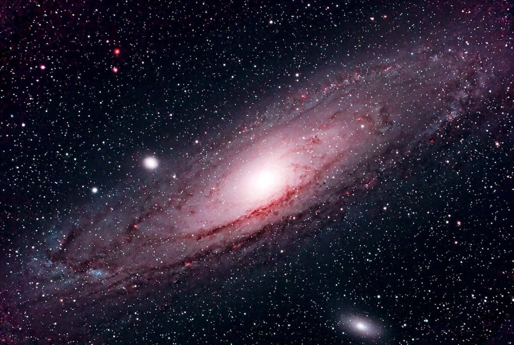

Introduction to the Andromeda Galaxy
The Andromeda Galaxy, also known as M31, is the closest spiral galaxy to our own Milky Way. It is located about 2.537 million light-years away from Earth and is on a collision course with the Milky Way. The two galaxies are expected to merge in about 4.5 billion years, eventually forming a larger elliptical galaxy.
Interesting Facts
- It contains about one trillion stars.
- Andromeda is expected to collide with the Milky Way in approximately 4.5 billion years.
- It is the largest galaxy in the Local Group of galaxies.
- The galaxy’s central black hole is more than 100 million solar masses.
Galaxy Comparison
| Galaxy | Approx. Distance from Earth | Number of Stars | Type |
|---|---|---|---|
| Andromeda (M31) | 2.537 million light-years | 1 trillion | Spiral |
| Milky Way | — | 100–400 billion | Spiral |
| Triangulum (M33) | 2.73 million light-years | 40 billion | Spiral |
| Large Magellanic Cloud | 163,000 light-years | 10 billion | Irregular |
Image of Andromeda
Image credit: NASA